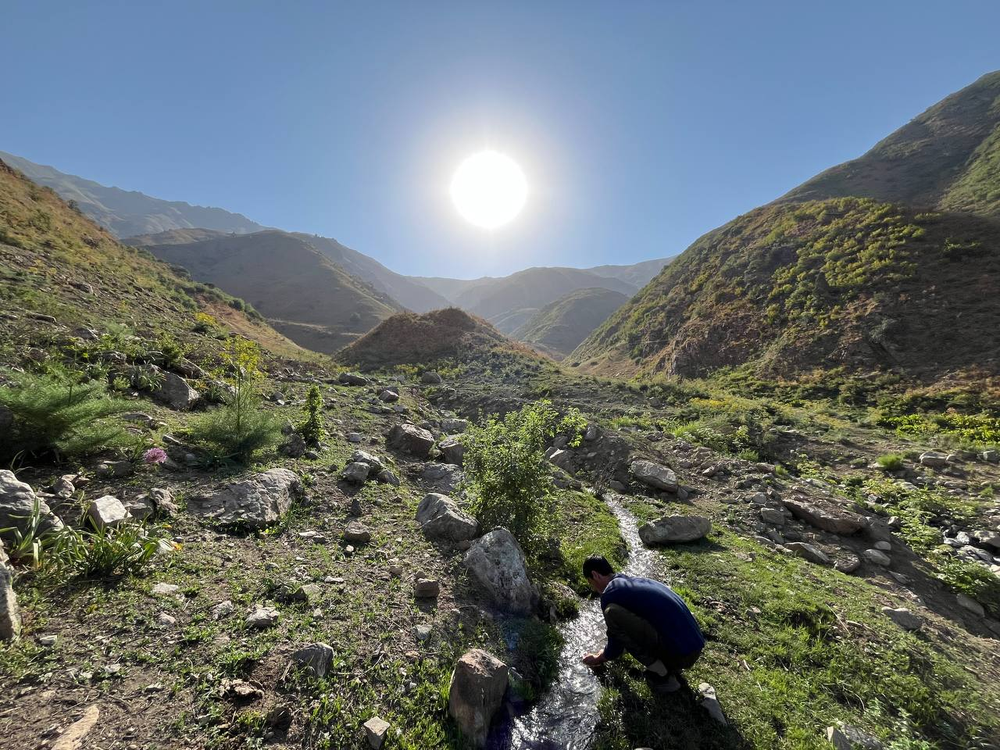
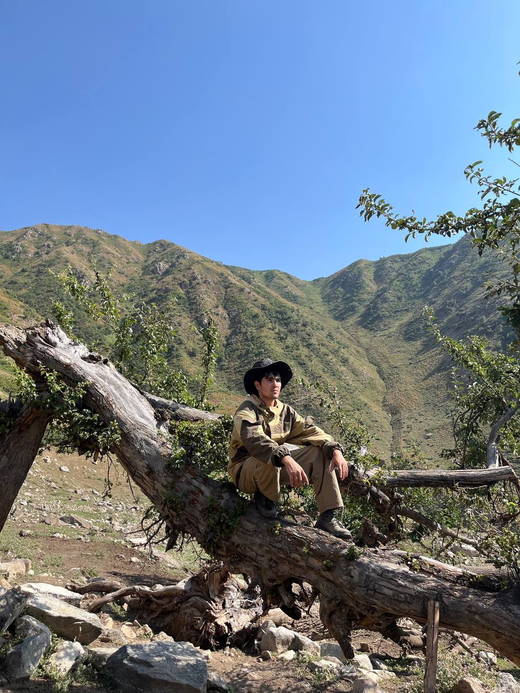
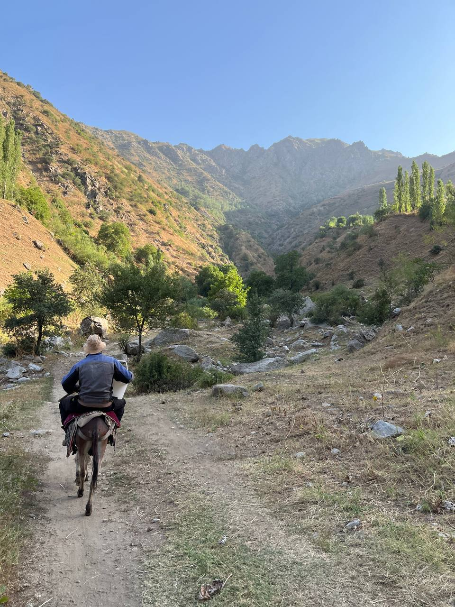
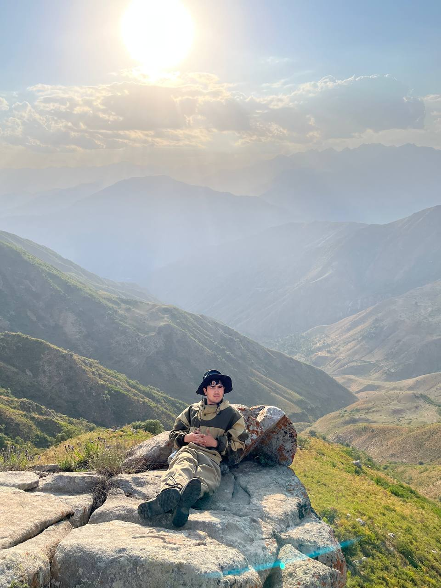
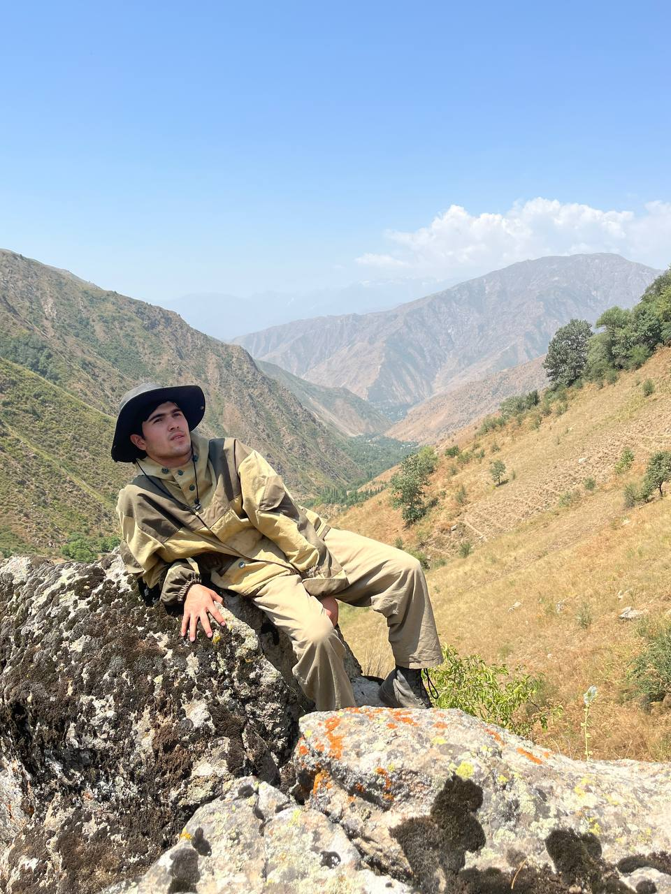
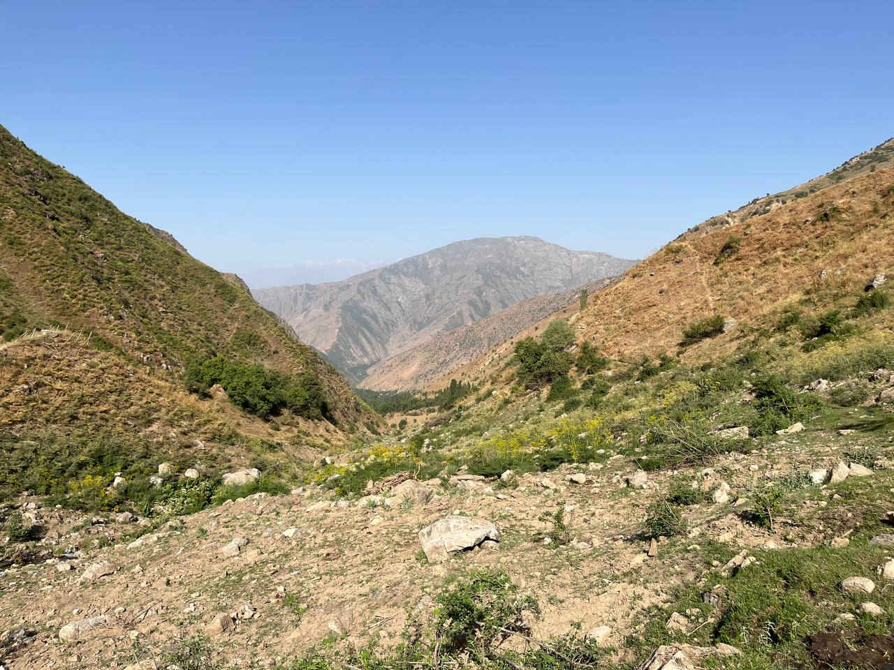
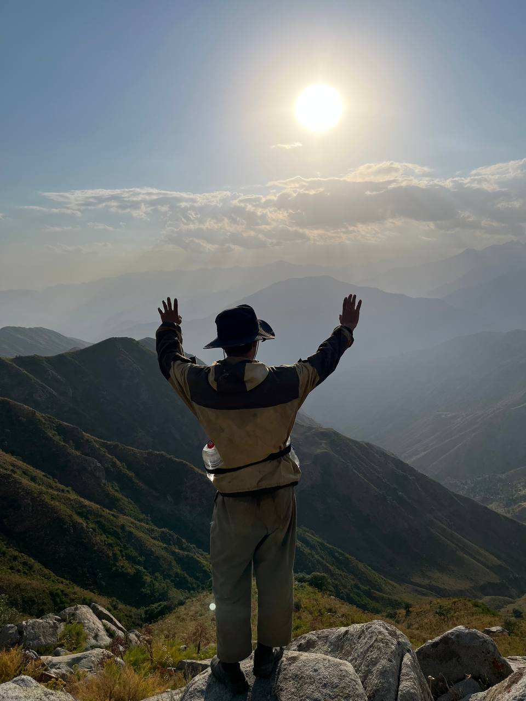
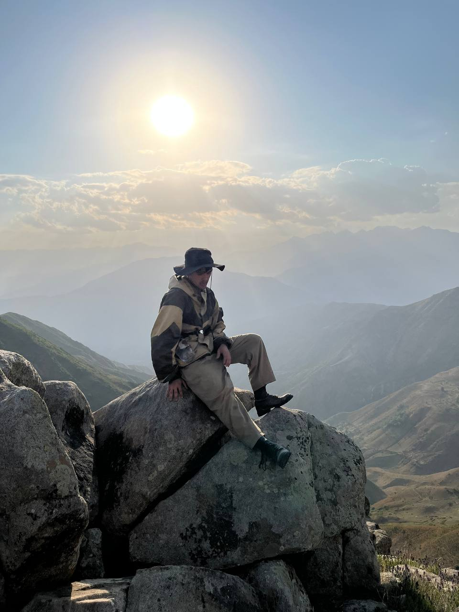
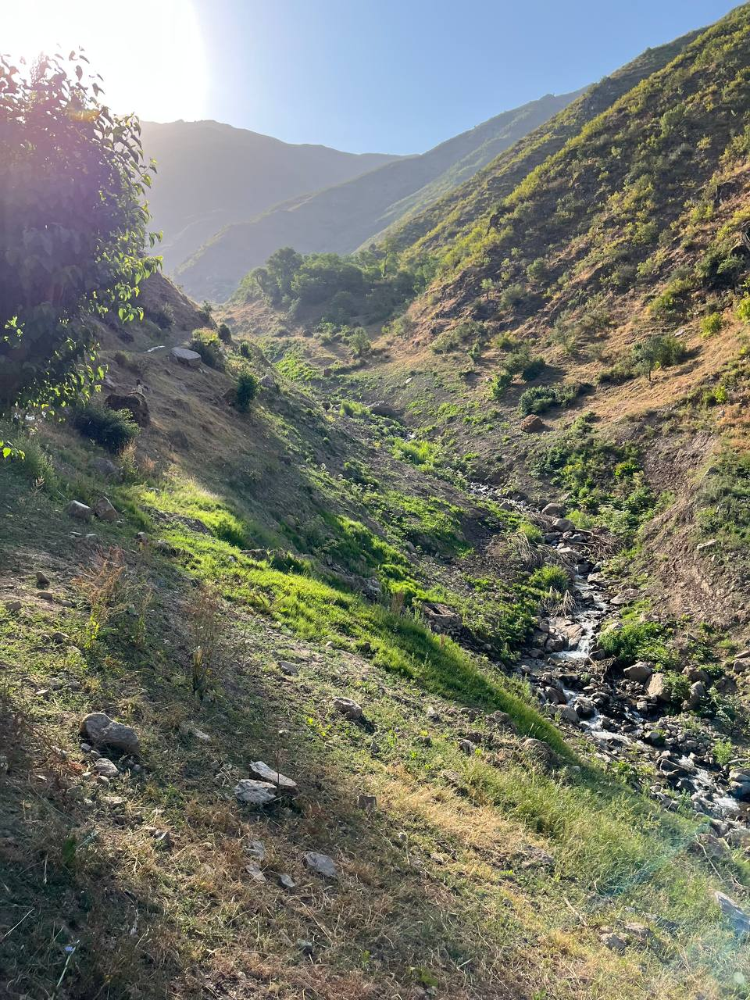
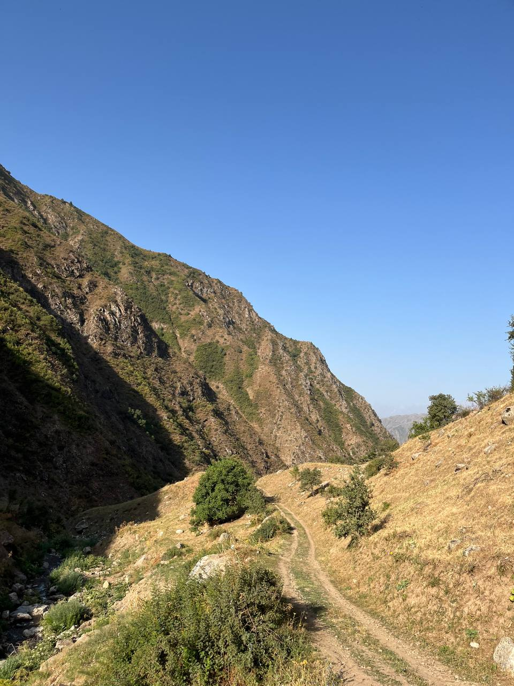

Forest Restoration
Replanting native juniper…
We work in the Kamarob Gorge to preserve clean water, protect forests, and empower local communities.
The Rasht Valley stretches through the heart of Tajikistan…
Kamarob Nature Fund was founded by people who walked these mountains…
"When you climb 3 km above Shukmak village…"
Replanting native juniper…
Protecting mountain springs…
Mapping migration routes…
Training local rangers…

We map, test, and protect 17 natural springs above Shukmak village.
Read More →
Volunteers climb to 2,500–3,000 m to plant native saplings.
Read More →



In the summer of 2023, a small group of friends from Dushanbe…
They also saw burned hillsides, a dried streambed…
Today our core team of 12 works year-round…
"We don't come from NGO offices…"Join Our Team →
Recorded at the natural springs and waterfalls near Shukmak village, Rasht Valley — 3,000 m above sea level.
Multiple springs merging at ~2,800 m. Water flows year-round from glacial melt and bedrock aquifers.
Unfiltered spring water at the Shukmak ridge. Tested clean — pH 7.2, zero coliform bacteria.




Every year we organize research and restoration expeditions into the Kamarob highlands.
Join our seasonal planting expeditions in the Kamarob highlands.
Apply to VolunteerWe partner with organizations that share our values.
Become a PartnerWhether you want to volunteer, partner, or learn more…